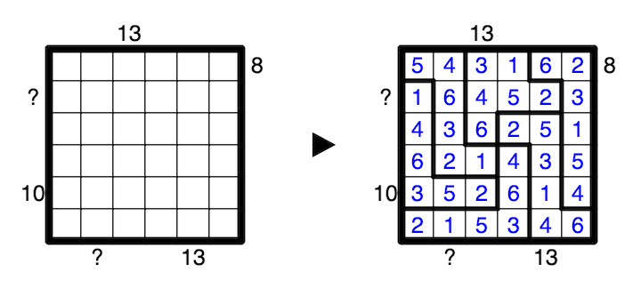

A number outside the grid indicates the sum of the first N numbers from the direction of the clue, where N is the number closest to the clue. The first N numbers are also all in the same region, and the N+1th number is in a different region. A question mark may be any positive integer.
A 1-6 example is provided:
